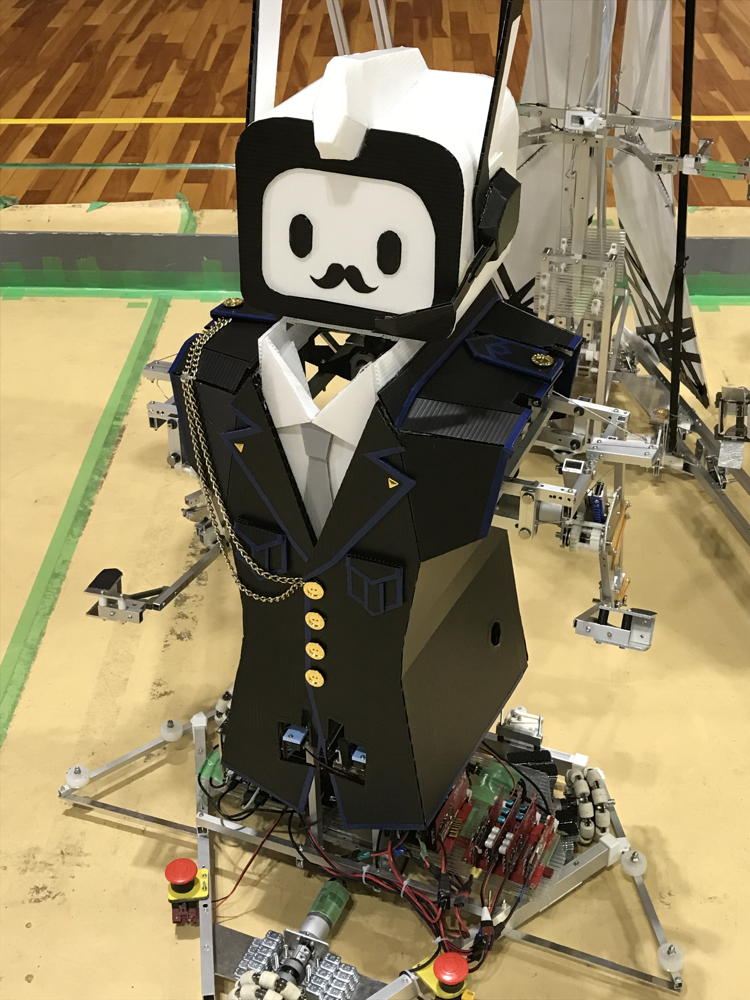

競技課題は「超絶技巧」です。すごいロボットを作るという抽象的なルールでした。 私たちはロマンあふれるロボットを作るというコンセプトのもとロボットを製作しました。 小さいロボットが巨大な強化パーツと合体することで独創性を見出そうとしました。

私は警備員の見た目に装飾した小さなロボットを製作しました。 肩上げ・腕の上下・指の開閉を行うことができます。 巨大な強化パーツと合体する時、他設計者と寸法や角度を合わせる必要があったためすり合わせるのが大変でした。